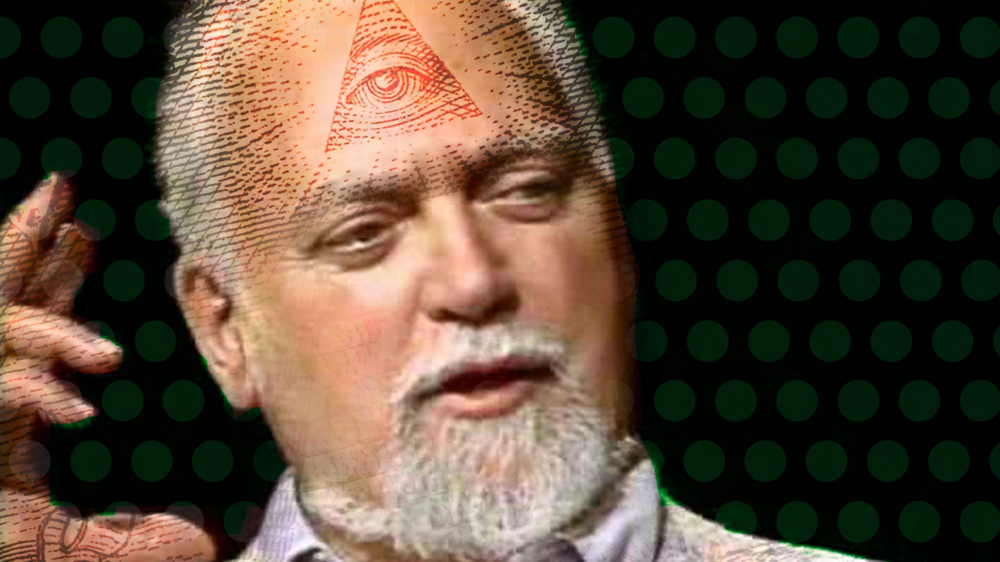
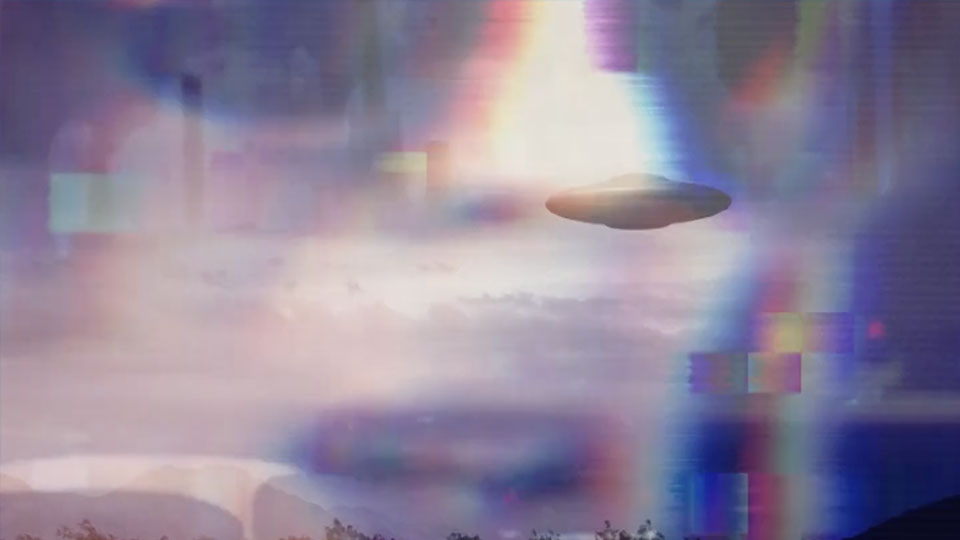

Reel-to-Real mystery
Adrian Reynolds, August 2021
In 1987 I quit a summer job in Tampa Florida to see cult writer Robert Anton Wilson do a talk in Tallahassee. I went to check him out having met some Odinists in Ohio who knew his schedule. After the event I stayed in Tallahassee a few days with a couple I met there. We chatted over a meal that worked out at $5.23 cents per head when we split the bill.

23 was a number whose significance had been introduced to Wilson by William Burroughs after encountering a Captain Clark in 1960 in Tangier. Clark noted with pride he'd had no accidents in 23 years. His ship sunk that day, killing Clark and everyone on board. And that evening, the writer caught a news report about another Captain Clark - his plane had crashed in Florida. Flight 23.

As for the 5, that's more to do with Wilson, drawing attention to the mind's ability to find patterns in everything. It's best declared with throat-clearing pomposity and a twinkle in the eye:
The Law of Fives states that everything relates to the number five in some way. The law of fives is never wrong.
The Tallahassee couple, Kelly and Andrea, had a glass bowl on a coffee table, full of scraps of paper with text on them. Pull a few, and they could be assembled into cut-ups, a technique derived from collage that Burroughs developed with the artist Brion Gysin. It became part of David Bowie's working method when he wrote song lyrics. Burroughs owned a plot of woodland not far away from where a community of artists, occultists and the Tallahassee crew had set up camp.
John Beaumont was part of a Tallahassee community radio station, who'd landed in the town after something bad went down in North Dakota. Beaumont reputedly had issues with amnesia, and Kelly first knew him through a mental health group she led. He became part of the extended family, up in the woods sometimes, though I'm unsure if he was a member of the group, which was known by its initials WOC. (The letters stood for whatever anyone chose.)
After returning to Britain, I heard from Kelly and Andrea that Beaumont had moved on. He was a big fan of David Bowie, trading tapes with a network of people who had access to unreleased studio recordings. Many were genuine, for sure. One night on his radio show he played a fragment of just such a song. It seemed to hold some significance for him. He played it again, and again, for the best part of an hour before the station manager came in and suggested the audience might like a change. Kelly felt a little responsible for the guy and tried to keep track of him, but he just - vanished?
It's only in the last year that rumours have surfaced of a group of between 60 and 200 men and women, all calling themselves John Beaumont and with nuggets of Bowie recordings from some or other trove. Analysis of the phantom Beaumont profile pictures reveal that they are all generated by Generative Adversarial Networks (GAN) - an emerging technology which uses machine learning to create hyper-realistic images. Which wraps up the mystery to a certain extent given that Bowie's life work is undergoing a posthumous reissue campaign, complete with obligatory unreleased material etc. Quite what it says of the one time I met the real John Beaumont, who with Kelly and Andrea were the people I ate with after that Wilson event at Florida State University in Tallahassee, is another matter?
